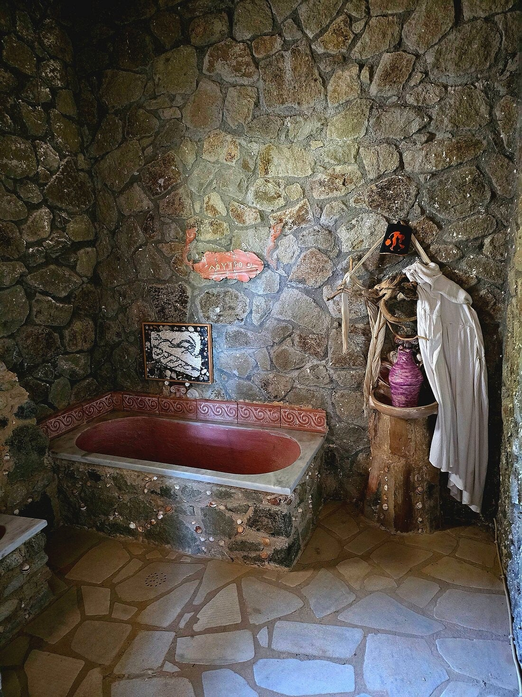

Botanische tuin en openluchtmuseum over Hippocrates – kruiden en planten uit de oudheid.
Park over Hippocrates
Hippocrates Garden is een cultureel en educatief park over het leven, de ideeën en de leefwereld van Hippocrates – deels botanische tuin, deels openluchtmuseum.
Hippocrates Garden is een cultureel en educatief park dat zich richt op het leven, de ideeën en de leefwereld van Hippocrates. Het park is deels een botanische tuin en openluchtmuseum. Op het terrein staan reconstructies van historische gebouwen: een Griekse woning, een stenen theater, een kleine tempel en ruimtes waar traditionele werktuigen en technieken worden getoond.
Je kunt vrij door het park wandelen. De tuinen bevatten bekende kruiden, planten en fruitbomen vanuit de oudheid en planten die een belangrijke rol vervulden in de geneeskunde en het dagelijks leven van die tijd.
Prijzen
Ticket € 6 inclusief herbal tea. Kinderen 5 t/m 10 jaar € 3 inclusief herbal tea. Kinderen 0 t/m 4 Gratis.

TuinBezoeken
Op Kos. Mooi te combineren met de Hippocratic Foundation en het Asklepion.
Tip: lees de plantenlabels – veel kruiden herken je uit keuken of apotheek.